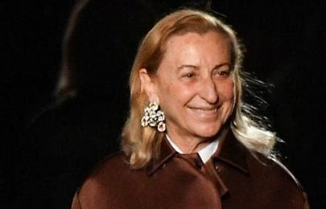
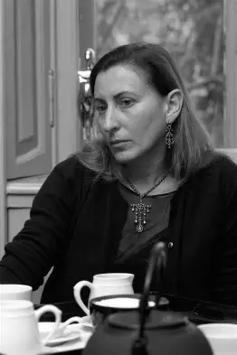
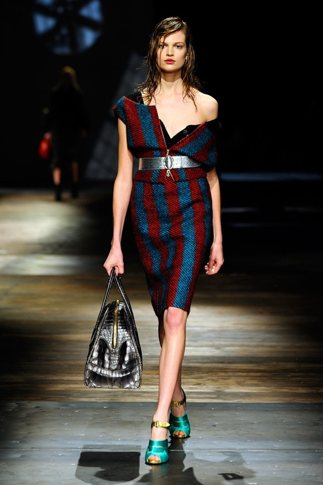
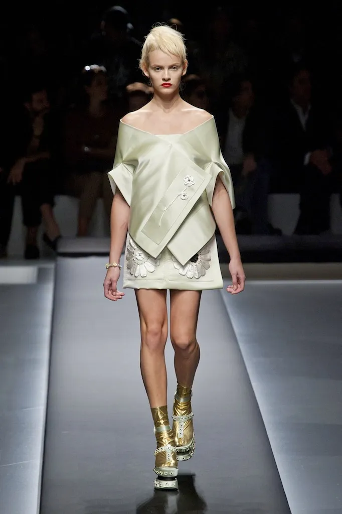

Acomplishment |
|||
| Home | Gallery | Acomplishmen | Contact |
|  | 1. She Transformed Prada From a Small Family Leather Shop Into a Global Luxury EmpireWhen Miuccia Prada took control of the family business in 1978, Prada was still a traditional Milanese leather-goods brand with a limited presence. Under her leadership, she reinvented not only the business but the concept of luxury itself. She expanded Prada into women's and men's ready-to-wear, footwear, accessories, eyewear, fragrance, and global retail. She built the Prada Group, integrated production vertically for quality and control, and developed a global network of architecturally innovative stores. Her strategic partnership with Patrizio Bertelli turned Prada into one of the world’s most forward-thinking luxury conglomerates, valued in the billions and recognized for intellectual sophistication and artistic integrity |
||
2. She Revolutionized Fashion Through the Use of Industrial Nylon and the Creation of “Modern Luxury”Miuccia’s decision to use military-grade black nylon—a material associated with utility rather than privilege—completely disrupted luxury fashion. The 1984 nylon backpack and 1985 nylon accessories line became symbols of her vision: understated, functional, subversive, and elegant. This non-traditional approach to luxe materials redefined the industry in the 1990s, sparked the minimalist movement, and established Prada as the brand that elevates the unexpected. Her signature “ugly-chic”—a blend of awkward, intellectual, and beautiful—challenged fashion traditions and opened the door for more conceptual design globally. |
 | ||
3. She Created Miu Miu, a Powerhouse Brand of Creative Femininity and Global InfluenceFounded in 1993 and named after her childhood nickname, Miu Miu gave Miuccia space to explore a more experimental identity. Miu Miu quickly became one of the most editorially influential brands of the 2000s and 2010s, and in the 2020s it became the most trend-setting womenswear label worldwide. Known for mixing innocence with rebellion and sensuality with rawness, the brand has produced defining cultural moments (e.g., the micro-mini skirt revival). Miuccia’s dual leadership of Prada and Miu Miu showcases her extraordinary range: from intellectual minimalism to hyper-expressive femininity. |
|||
4. She Founded Fondazione Prada, One of the World’s Leading Modern Art InstitutionsIn 1995, Miuccia Prada co-founded Fondazione Prada, expanding her influence beyond fashion into contemporary art, film, philosophy, and architecture. The foundation hosts major exhibitions, cinematic retrospectives, cultural studies, and cross-disciplinary research. Its headquarters—designed by Rem Koolhaas and OMA—has become a landmark of contemporary architecture and a global cultural destination. Fondazione Prada collaborates with leading creatives like Wes Anderson, Carsten Höller, and David Cronenberg, transforming Prada into a cultural force that shapes intellectual and artistic discourse worldwide. |
 | ||
|  | 5. She Became One of the Most Influential Designers in Modern History, Merging Fashion With Ideas, Politics, and CultureMiuccia Prada stands out not only for aesthetic innovation but for her intellectual approach. She infuses fashion with political, feminist, psychological, and sociological reflections—turning clothing into cultural commentary. Her work has influenced generations of designers (from Raf Simons to Phoebe Philo), reshaped discussions about femininity, and set the tone for multiple decades of style. Her partnership with Raf Simons since 2020 continues to push Prada to the forefront of global fashion. Consistently recognized by major awards, magazines, museums, and scholars, she is widely considered one of the most important designers of the last 50 years. |
||
| Copy Rigth 2025 Miuccia Prada Official | |||